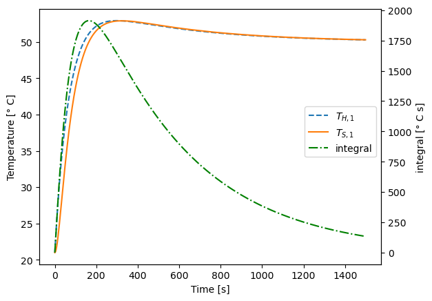
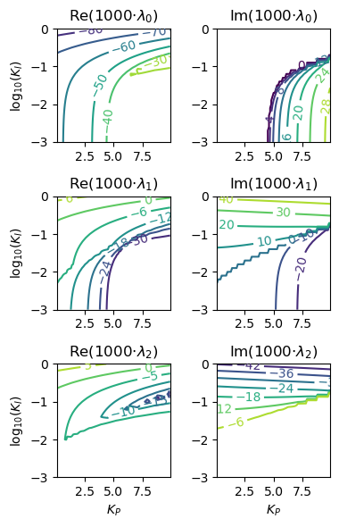
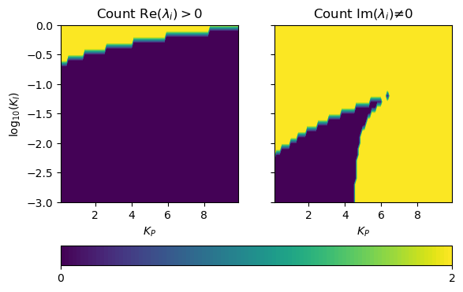
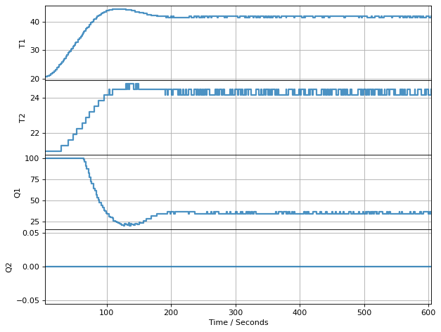
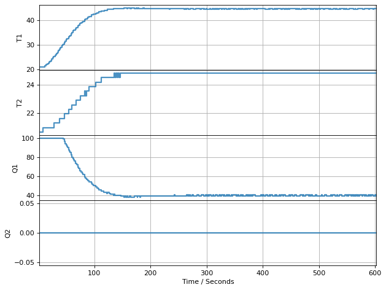

3.9. Analysis of Proportional-Integral Controller#
3.9.1. Learning Objectives#
In this notebook, we will use a mathematical model for the TCLab to design and analyze a PI controller.
After studying this notebook and completing the activities, you will be able to:
Agument dynamic system model with PI feedback control law to predict closed loop dynamics
Analyze stability of a (linear) system
Perform senstivity analysis to tune controller
First review the proportional only controller notes for modeling details.
3.9.2. Proporational-Integral Control Law#
We will consider the proporational control law:
Here, \(K_P > 0\) is the proportional gain, \(K_I > 0\) is the integral gain, and \(e(t) = T_{set} - T_{S,1}(t)\) is the tracking error. For the purposes of stability analysis, we will consider a constant \(T_{set}\).
3.9.3. Closed-Loop Dynamics#
How can we model the integral in the control law? Let’s add a new state to our model for the integral: $$
$$
Let’s collect similar terms:
Finally, we can write this as a linear differential equation in matrix form:
This system describes the closed loop dynamics. Take a few minutes to compare to the model for open loop dynamics. Notice the above model does not include \(u\) or \(\mathbf{B}\) because the control law is embedded in the closed loop model.
3.9.4. Numeric Simulation#
Let’s simulate the closed loop response.
import matplotlib.pyplot as plt
import numpy as np
from scipy.integrate import solve_ivp
# parameters
T_amb = 21 # deg C
alpha = 0.00016 # watts / (units P1 * percent U1)
P1 = 100 # P1 units
U1 = 50 # steady state value of u1 (percent)
# fitted parameters (see previous lab) for hardware
'''
Ua = 0.0261 # watts/deg C
Ub = 0.0222 # watts/deg C
CpH = 1.335 # joules/deg C
CpS = 1.328 # joules/deg C
'''
# fitted parameters (repeat Lab 3) for TCLab digital twin
Ua = 0.05 # watts/deg C
Ub = 0.05 # watts/deg C
CpH = 5.0 # joules/deg C
CpS = 1.0 # joules/deg C
t_final = 1500
t_step = 1
t_expt = np.arange(0,t_final,t_step)
T_set = 50
def simulate_response(Kp=2.0, Ki=0.1):
""" Simulate the response of the system to a step change in setpoint
(initialized at ambient temperature) with a PI controller.
Arguments:
Kp: proportional gain
Ki: integral gain
Returns:
Nothing
Actions:
Plots the response of the system
"""
A_PI = np.array([[-(Ua + Ub)/CpH, (Ub - alpha*P1*Kp)/CpH, alpha*P1*Ki/CpH],
[Ub/CpS, -Ub/CpS, 0],
[0, -1, 0]])
def deriv3(t, y):
''' RHS of ODE for system dynamics
Arguments:
t: time
y: state vector [T_H1, T_S1, integral]
'''
return A_PI @ y
# Initial point: ambient temperature, I = 0
soln_P = solve_ivp(deriv3, [min(t_expt), max(t_expt)], [T_amb - T_set, T_amb-T_set, 0], t_eval=t_expt)
# Create axes for xyy plot
fig, ax1 = plt.subplots()
# Plot temperatures on left axis
ax1.plot(soln_P.t, soln_P.y[0] + T_set,label='$T_{H,1}$', linestyle='--')
ax1.plot(soln_P.t, soln_P.y[1] + T_set,label='$T_{S,1}$', linestyle='-')
ax1.set_xlabel('Time [s]')
ax1.set_ylabel('Temperature [° C]')
# Plot the integral on the right axis
ax2 = ax1.twinx()
ax2.plot(soln_P.t, soln_P.y[2] ,label='integral', color='green', linestyle='-.')
ax2.set_ylabel('integral [° C s]')
# Add legend
#fig.legend(['T1H','T1S','integral'])
fig.legend(bbox_to_anchor=(0.9, 0.6))
plt.show()
simulate_response(Kp=2.5, Ki=0.01)

Perform a simple sensitivity analysis and answer the following discussion questions:
What happens with small and large \(K_P\) values? Does the solution overshoot or undershoot? How long does it take to reach the set point?
What happens with small and large \(K_I\) values?
3.9.5. Stability Analysis#
Let’s inspect the eigenvalues of \(\mathbf{A}\).
# Eigendecomposition analysis
from scipy.linalg import eig
def calc_eig(Kp,Ki,verbose=True):
A_PI = np.array([[-(Ua + Ub)/CpH, (Ub - alpha*P1*Kp)/CpH, -alpha*P1*Ki/CpH],
[Ub/CpS, -Ub/CpS, 0],
[0, 1, 0]])
w, vl = eig(A_PI)
if verbose:
for i in range(len(w)):
print("Eigenvalue",i,"=",w[i])
print("Eigenvector",i,"=",vl[:,i],"\n")
return w
calc_eig(Kp=1.5,Ki=0.01)
Eigenvalue 0 = (-0.05764412757011409+0j)
Eigenvector 0 = [ 0.00879784 -0.05754637 0.99830407]
Eigenvalue 1 = (-0.00940444864546306+0j)
Eigenvector 1 = [ 0.00763502 0.00940376 -0.99992664]
Eigenvalue 2 = (-0.002951423784422808+0j)
Eigenvector 2 = [-0.00277718 -0.0029514 0.99999179]
array([-0.05764413+0.j, -0.00940445+0.j, -0.00295142+0.j])
Here are rules for interpretting the eigenvalues and eigenvectors:
If all of the real components of the eigenvalues are negative, the system is stable and will return to the steady state (\(T^*_{S,1} \rightarrow 0\), \(T^*_{H,1} \rightarrow 0\)).
The eigenvectors corresponding to any eigenvalues with a positive real component shows the direction of exponential growth.
If any of the eigenvalues have non-zero imaginary components, the system osciallates.
Let’s perform a sensitivity analysis to see how the eigenvalues change.
Kp_range = np.arange(0.1,10,0.1)
Ki_range = np.arange(-3,0.1,0.1)
xv, yv = np.meshgrid(Kp_range, Ki_range)
# store eigenvalues in 3D array
s3 = (len(Ki_range),len(Kp_range),3)
s2 = (len(Ki_range),len(Kp_range))
ev = np.zeros(s3, dtype=complex)
positive_real_eig = np.zeros(s2)
nonzero_imag_eig = np.zeros(s2)
small_number = 1E-9
for i in range(len(Ki_range)):
for j in range(len(Kp_range)):
ev[i,j,:] = calc_eig(xv[i,j], np.power(10,yv[i,j]), verbose=False)[:]
positive_real_eig[i,j] = sum(np.real(ev[i,j,:]) >= -small_number)
nonzero_imag_eig[i,j] = sum(np.abs(np.imag(ev[i,j,:])) >= small_number)
fig, axs = plt.subplots(3,2)
fig.set_figheight(6)
fig.set_figwidth(4)
scale = 1000
# Loop over eigenvalues (rows)
for i in range(3):
# Plot contour of real component
CS = axs[i,0].contour(xv,yv,np.real(ev[:,:,i])*scale)
axs[i,0].set_box_aspect(1)
axs[i, 0].clabel(CS, inline=True, fontsize=10)
axs[i, 0].set_title('Re(' + str(scale) + '$\cdot \lambda_'+str(i)+'$)')
axs[i, 0].set_ylabel('log$_{10}$($K_I$)')
# Plot contour of imaginary component
CS = axs[i,1].contour(xv,yv,np.imag(ev[:,:,i])*scale)
axs[i,1].set_box_aspect(1)
axs[i, 1].clabel(CS, inline=True, fontsize=10)
axs[i, 1].set_title('Im(' + str(scale) + '$\cdot \lambda_'+str(i)+'$)')
# Bottom row: add labels to x-axis
if i == 2:
axs[i, 0].set_xlabel('$K_P$')
axs[i, 1].set_xlabel('$K_P$')
plt.tight_layout()
plt.show()

These six subplots show how the real (right) and imaginary (left) components of the three eigenvalues (rows) change as a function of \(K_P\) and \(K_I\). While these plots are informative, they are a little difficult to interpret.
The code below plots the number of positive real eigenvalue componenets (left) and nonzero imaginary eigenvalue components (right). Yellow regions are 2 and blue regions are 0. Thus, choosing \(K_P\) and \(K_I\) values in the blue region on the left ensures the controller is stable. Likewise, selecting the blue region on the right ensures no oscillations. The exact region of these transitions depends on our assumptions about the mathematical model (and measurement noise). We are hoping the model is good enough to use this plot as a guideline for tuning the controller.
plt.figure()
fig, axs = plt.subplots(1,2, sharey=True)
axs[0].set_box_aspect(1)
cs = axs[0].contourf(xv,yv,positive_real_eig, levels=100)
axs[0].set_xlabel('$K_P$')
axs[0].set_ylabel('log$_{10}$($K_I$)')
axs[0].set_title('Count Re($\lambda_i$)$>0$')
axs[1].set_box_aspect(1)
cs = axs[1].contourf(xv,yv,nonzero_imag_eig, levels=100)
axs[1].set_xlabel('$K_P$')
#axs[1].set_ylabel('log$_{10}$($K_i$)')
axs[1].set_title('Count Im($\lambda_i$)$≠0$')
cbar = fig.colorbar(cs, ticks=[0, 2], orientation='horizontal', ax=axs[:])
#plt.tight_layout()
plt.show()
<Figure size 640x480 with 0 Axes>

This is the plot you should reproduce and interpret in Lab 4: PI Control.
3.9.6. Simulate Performance with TC Lab#
%matplotlib inline
from tclab import setup, clock, Historian, Plotter
def simulate_PI_response(Kp=2.0, Ki=0.1):
""" Simulate a position form PI controller with the
TCLab digital twin.
This implementation contains a naive anti-windup for
position form. For our class, we will focus on velocity
form. This example shows position form to complete the website.
Arguments:
Kp: proportional gain
Ki: integral gain
Returns:
Nothing
Actions:
Performs simulation and plots the results
"""
def PI_naive(Kp=4, Ki=0.01, MV_bar=0, antiwindup=True):
""" Basic proportional-integral controller
Arguments:
Kp: proportional gain
MV_bar: steady-state value for manipulated variable
"""
# Minimum and maximum bounds for manipulated variables
MV_min = 0
MV_max = 100
# Initialize with MV_bar
MV = MV_bar
# Initialize integral
I = 0
# Set limits for integral windup protection
I_max = 100
I_min = -100
while True:
t_step, SP, PV, MV = yield MV
e = PV - SP # calculate error
I += t_step*e # apply integral
if antiwindup:
I = max(I_min, min(I_max, I)) # Apply bounds to prevent integral wind-up
MV = MV_bar - Kp*e - Ki*I # Apply control law
MV = max(MV_min, min(MV_max, MV)) # Apply manipulated variable upper and lower bounds
# Initialize in simulation mode
TCLab = setup(connected=False, speedup = 20)
SP = 40 # set point, deg C
tfinal = 600 # simulation horizon, seconds
t_step = 1 # time step, seconds
u_star = Ua*(SP-T_amb) / (alpha*100) # u at steady-state
print("MV_bar =",u_star)
# create control loop
controller1 = PI_naive(Kp, Ki, MV_bar=u_star)
controller1.send(None)
with TCLab() as lab:
h = Historian(lab.sources)
p = Plotter(h, tfinal)
for t in clock(tfinal, t_step):
PV = lab.T1 # measure the the process variable
MV = lab.U1 # get manipulated variable
MV = controller1.send([t_step, SP, PV, MV]) # PI control to determine the MV
lab.Q1(MV) # set the heater power
p.update() # log data
3.9.6.1. Large Gains: \(K_P = 8\) and \(K_I = 0.1\)#
simulate_PI_response(Kp=8, Ki=0.1)

TCLab Model disconnected successfully.
3.9.6.2. Small Gains: \(K_P = 4\) and \(K_I = 0.01\)#
simulate_PI_response(Kp = 4, Ki=0.01)

TCLab Model disconnected successfully.